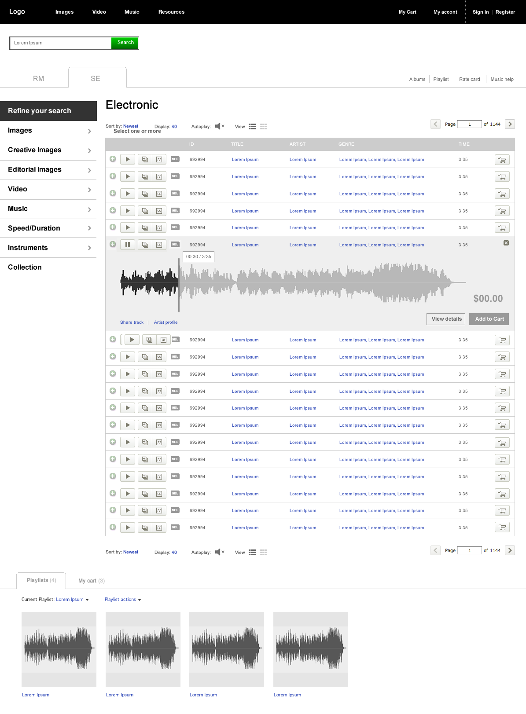

The goal of this project was to eliminate duplicate search results and to explore new and different layouts for music results.
Duplicate tracks were common as many results are simply stem tracks of a main song (single instruments used for music production). To solve this I grouped together all stem tracks under each song they were associated with and hid them under the main search results, expandable when desired.
View PDF 